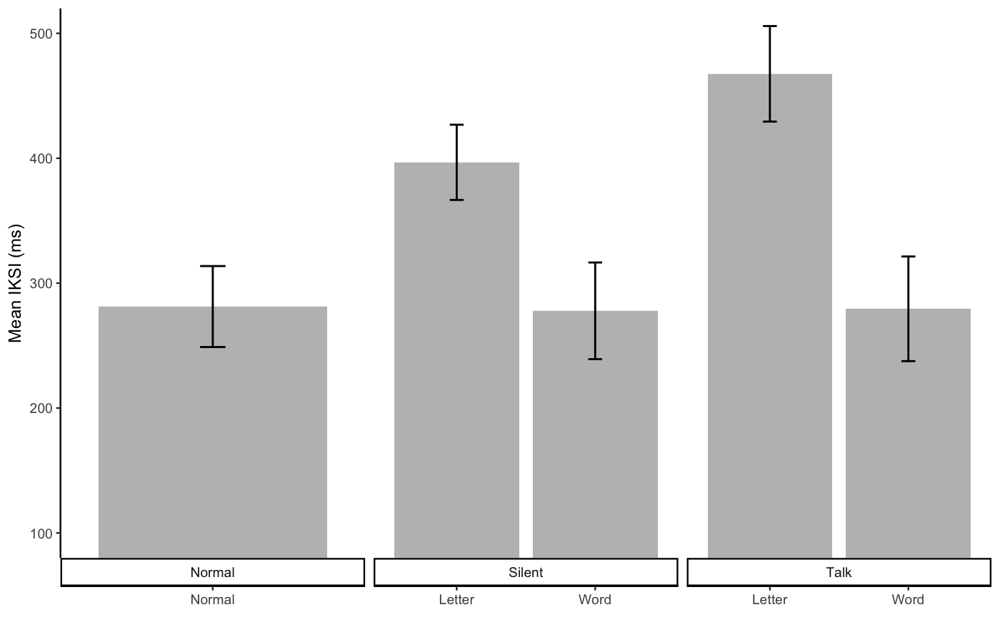
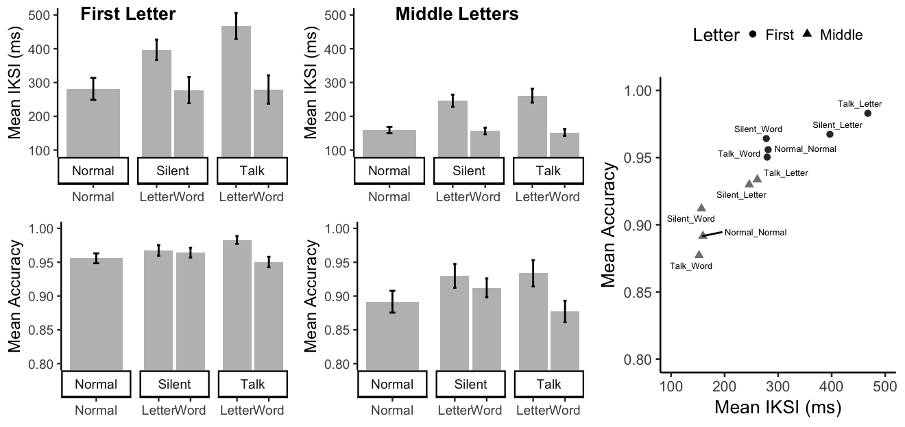

E1B_Analysis.Rmd#load E1B data
E1B_data <- talk_type_E1B_data
# IKSI analysis
E1B_data <- E1B_data %>%
filter(accuracy == 1,
iksis < 5000,
LetterType != "Space",
voice != "Normal",
linguistic_unit != "Normal") %>%
mutate(subject = as.factor(subject),
voice = as.factor(voice),
linguistic_unit = as.factor(linguistic_unit),
LetterType = as.factor(LetterType)) %>%
group_by(subject,voice,linguistic_unit,LetterType) %>%
summarise(mean_iksi = mean(modified_recursive_moving(iksis)$restricted),
prop_removed = modified_recursive_moving(iksis)$prop_removed)
E1B_aov_out <- aov(mean_iksi ~ voice*linguistic_unit*LetterType +
Error(subject/(voice*linguistic_unit*LetterType)), E1B_data)
knitr::kable(xtable(summary(E1B_aov_out)))| Df | Sum Sq | Mean Sq | F value | Pr(>F) | |
|---|---|---|---|---|---|
| Residuals | 14 | 510011.751 | 36429.411 | NA | NA |
| voice | 1 | 12916.437 | 12916.437 | 3.842151 | 0.0701924 |
| Residuals1 | 14 | 47064.807 | 3361.772 | NA | NA |
| linguistic_unit | 1 | 478311.239 | 478311.239 | 24.453078 | 0.0002154 |
| Residuals | 14 | 273845.172 | 19560.369 | NA | NA |
| LetterType | 1 | 687226.213 | 687226.213 | 24.022714 | 0.0002337 |
| Residuals | 14 | 400502.909 | 28607.351 | NA | NA |
| voice:linguistic_unit | 1 | 14780.113 | 14780.113 | 3.076148 | 0.1013027 |
| Residuals | 14 | 67266.450 | 4804.746 | NA | NA |
| voice:LetterType | 1 | 7204.638 | 7204.638 | 4.664122 | 0.0486337 |
| Residuals | 14 | 21625.708 | 1544.693 | NA | NA |
| linguistic_unit:LetterType | 1 | 22244.101 | 22244.101 | 7.815177 | 0.0143047 |
| Residuals | 14 | 39847.773 | 2846.270 | NA | NA |
| voice:linguistic_unit:LetterType | 1 | 4632.377 | 4632.377 | 3.283505 | 0.0914778 |
| Residuals | 14 | 19751.235 | 1410.803 | NA | NA |
E1B_iksi_table <- E1B_data %>%
group_by(voice,linguistic_unit,LetterType) %>%
summarize(mIKSI = mean(mean_iksi),
sem = sd(mean_iksi)/sqrt(length(mean_iksi)))
#levels(E1A_iksi_table$paragraph) <- c("Say Letter", "Say Word")
E1B_graph_iksi <- ggplot(E1B_iksi_table, aes(x=linguistic_unit,
y=mIKSI,
group=LetterType,
fill=LetterType))+
geom_bar(stat="identity", position="dodge")+
geom_errorbar(aes(ymin=mIKSI-sem,
ymax=mIKSI+sem), width=.1,
linetype="solid", position=position_dodge(.9))+
scale_fill_grey(start = 0.6, end = 0.8, na.value = "red",
aesthetics = "fill")+
theme_classic(base_size=12)+
theme(legend.position = "top",
legend.title = element_blank())+
ylab("Mean IKSI (ms)")+
xlab("Linguistic Unit")+
facet_wrap(~voice)
knitr::kable(E1B_iksi_table)| voice | linguistic_unit | LetterType | mIKSI | sem |
|---|---|---|---|---|
| Talk | Letter | First | 467.5775 | 38.244372 |
| Talk | Letter | Middle | 261.0719 | 20.618758 |
| Talk | Word | First | 279.4567 | 41.881543 |
| Talk | Word | Middle | 152.2636 | 10.242864 |
| Silent | Letter | First | 396.7084 | 30.105025 |
| Silent | Letter | Middle | 246.0493 | 18.117573 |
| Silent | Word | First | 277.8326 | 38.688399 |
| Silent | Word | Middle | 156.7808 | 9.640095 |
letter level accuracies were added to the talk_type_E1B_data file.
E1Bacc_data <- talk_type_E1B_data
E1Bacc_data$closest[is.na(E1Bacc_data$closest)] <- ""
letter_accuracy <- E1Bacc_data$accuracy
for(i in 1:dim(E1Bacc_data)[1]){
clet <- as.character(E1Bacc_data[i,]$letters)
cword <- unlist(strsplit(as.character(E1Bacc_data[i,]$closest),split=""))
if(E1Bacc_data$accuracy[i] == 0){
if(length(cword)>0){
if(E1Bacc_data[i,]$LetterPosition <= length(cword)){
if(clet != " "){
if(clet == cword[E1Bacc_data[i,]$LetterPosition]){
letter_accuracy[i] <- 1
} else {
letter_accuracy[i] <- 0
}
}
}
}
}
}
E1Bacc_data <- cbind(E1Bacc_data,letter_accuracy)
talk_type_E1B_data <- E1Bacc_data# Accuracy
E1Bacc_data <- talk_type_E1B_data
E1Bacc_data <- E1Bacc_data %>%
filter(iksis < 5000,
LetterType != "Space",
voice != "Normal",
linguistic_unit != "Normal") %>%
mutate(subject = as.factor(subject),
voice = as.factor(voice),
linguistic_unit = as.factor(linguistic_unit),
LetterType = as.factor(LetterType)) %>%
group_by(subject,voice,linguistic_unit, LetterType) %>%
summarise(mean_acc = mean(letter_accuracy))
E1Bacc_aov_out <- aov(mean_acc ~ voice*linguistic_unit*LetterType + Error(subject/(voice*linguistic_unit*LetterType)), E1Bacc_data)
E1Bacc_apa_print <- apa_print(E1Bacc_aov_out)
E1Bacc_means <- model.tables(E1Bacc_aov_out,"means")
knitr::kable(xtable(summary(E1Bacc_aov_out)))| Df | Sum Sq | Mean Sq | F value | Pr(>F) | |
|---|---|---|---|---|---|
| Residuals | 14 | 0.1631269 | 0.0116519 | NA | NA |
| voice | 1 | 0.0016173 | 0.0016173 | 2.3275604 | 0.1493709 |
| Residuals1 | 14 | 0.0097281 | 0.0006949 | NA | NA |
| linguistic_unit | 1 | 0.0230912 | 0.0230912 | 11.7181925 | 0.0041185 |
| Residuals | 14 | 0.0275876 | 0.0019705 | NA | NA |
| LetterType | 1 | 0.0835370 | 0.0835370 | 31.2027809 | 0.0000671 |
| Residuals | 14 | 0.0374812 | 0.0026772 | NA | NA |
| voice:linguistic_unit | 1 | 0.0086392 | 0.0086392 | 5.1177370 | 0.0401165 |
| Residuals | 14 | 0.0236331 | 0.0016881 | NA | NA |
| voice:LetterType | 1 | 0.0020324 | 0.0020324 | 4.6876499 | 0.0481426 |
| Residuals | 14 | 0.0060700 | 0.0004336 | NA | NA |
| linguistic_unit:LetterType | 1 | 0.0029127 | 0.0029127 | 5.8468638 | 0.0298204 |
| Residuals | 14 | 0.0069742 | 0.0004982 | NA | NA |
| voice:linguistic_unit:LetterType | 1 | 0.0001564 | 0.0001564 | 0.3220731 | 0.5793520 |
| Residuals | 14 | 0.0067979 | 0.0004856 | NA | NA |
E1B_acc_table <- E1Bacc_data %>%
group_by(voice,linguistic_unit, LetterType) %>%
summarize(mAcc = mean(mean_acc),
sem = sd(mean_acc)/sqrt(length(mean_acc)))
#levels(E1A_acc_table$paragraph) <- c("Say Letter", "Say Word")
E1B_graph_acc <- ggplot(E1B_acc_table,
aes(x=linguistic_unit,
y=mAcc,
group=LetterType,
fill=LetterType))+
geom_bar(stat="identity",position="dodge")+
geom_errorbar(aes(ymin=mAcc-sem,
ymax=mAcc+sem), width=.1,
linetype="solid", position=position_dodge(.9))+
scale_fill_grey(start = 0.6, end = 0.8, na.value = "red",
aesthetics = "fill")+
theme_classic(base_size=12)+
theme(legend.position = "top",
legend.title = element_blank())+
ylab("Mean Word Accuracy")+
xlab("Linguistic Unit")+
coord_cartesian(ylim=c(.8,1))+
facet_wrap(~voice)
knitr::kable(E1B_acc_table)| voice | linguistic_unit | LetterType | mAcc | sem |
|---|---|---|---|---|
| Talk | Letter | First | 0.9829305 | 0.0058115 |
| Talk | Letter | Middle | 0.9340671 | 0.0194085 |
| Talk | Word | First | 0.9503537 | 0.0077375 |
| Talk | Word | Middle | 0.8772173 | 0.0158522 |
| Silent | Letter | First | 0.9673555 | 0.0077649 |
| Silent | Letter | Middle | 0.9303876 | 0.0175880 |
| Silent | Word | First | 0.9641518 | 0.0071661 |
| Silent | Word | Middle | 0.9120436 | 0.0140493 |
E1B_FL_iksis <- talk_type_E1B_data
E1B_FL_iksis <- E1B_FL_iksis %>%
filter(accuracy == 1,
iksis < 5000,
LetterType == "First") %>%
mutate(condition = paste(voice,linguistic_unit,sep="_")) %>%
mutate(subject = as.factor(subject),
condition = as.factor(condition)) %>%
group_by(subject,condition) %>%
summarize(mean_iksi = mean(modified_recursive_moving(iksis)$restricted),
prop_removed = modified_recursive_moving(iksis)$prop_removed)
E1B_FL_aov_out <- aov(mean_iksi ~ condition +
Error(subject/(condition)), E1B_FL_iksis)
knitr::kable(xtable(summary(E1B_FL_aov_out)))| Df | Sum Sq | Mean Sq | F value | Pr(>F) | |
|---|---|---|---|---|---|
| Residuals | 14 | 959182.5 | 68513.036 | NA | NA |
| condition | 4 | 457062.7 | 114265.677 | 14.49192 | 0 |
| Residuals1 | 56 | 441547.9 | 7884.784 | NA | NA |
E1B_FL_iksi_table <- E1B_FL_iksis %>%
group_by(condition) %>%
summarize(mIKSI = mean(mean_iksi),
sem = sd(mean_iksi)/sqrt(length(mean_iksi)))%>%
mutate(voice = as.character(t(data.frame(strsplit(as.character(condition),split="_")))[,1]),
linguistic_unit = as.character(t(data.frame(strsplit(as.character(condition),split="_")))[,2]))
#levels(E1A_iksi_table$paragraph) <- c("Say Letter", "Say Word")
E1B_FL_graph_iksi <- ggplot(E1B_FL_iksi_table, aes(x=linguistic_unit,
y=mIKSI))+
geom_bar(stat="identity", position="dodge", fill="grey")+
geom_errorbar(aes(ymin=mIKSI-sem,
ymax=mIKSI+sem), width=.1,
linetype="solid", position=position_dodge(.9))+
scale_fill_grey(start = 0.6, end = 0.8, na.value = "red",
aesthetics = "fill")+
theme_classic(base_size=9)+
theme(legend.position = "top",
legend.title = element_blank())+
coord_cartesian(ylim=c(100,500))+
scale_y_continuous(minor_breaks=seq(200,500,25),
breaks=seq(100,500,100))+
#scale_x_discrete(labels = c('Normal',
# 'Letter',
# 'Word',
# 'Letter',
# 'Word'))+
ylab("Mean IKSI (ms)")+
theme(axis.title.x = element_blank())+
facet_wrap(~voice, scales = "free_x", strip.position="bottom")
knitr::kable(E1B_FL_iksi_table)| condition | mIKSI | sem | voice | linguistic_unit |
|---|---|---|---|---|
| Normal_Normal | 281.2607 | 32.40902 | Normal | Normal |
| Silent_Letter | 396.7084 | 30.10502 | Silent | Letter |
| Silent_Word | 277.8326 | 38.68840 | Silent | Word |
| Talk_Letter | 467.5775 | 38.24437 | Talk | Letter |
| Talk_Word | 279.4567 | 41.88154 | Talk | Word |

# Normal vs. silentword and talk word
E1B_FL_NvsW <- apa_print(t_contrast_rm(df=E1B_FL_iksis,
subject = "subject",
dv = "mean_iksi",
condition = "condition",
A_levels = c("Normal_Normal"),
B_levels = c("Silent_Word","Talk_Word"),
contrast_weights = c(-1,.5,.5) ))##
## One Sample t-test
##
## data: contrast_vector
## t = -0.14099, df = 14, p-value = 0.8899
## alternative hypothesis: true mean is not equal to 0
## 95 percent confidence interval:
## -42.41293 37.18085
## sample estimates:
## mean of x
## -2.616045## $estimate
## [1] "$M = -2.62$, 95\\% CI $[-42.41$, $37.18]$"
##
## $statistic
## [1] "$t(14) = -0.14$, $p = .890$"
##
## $full_result
## [1] "$M = -2.62$, 95\\% CI $[-42.41$, $37.18]$, $t(14) = -0.14$, $p = .890$"
##
## $table
## NULL# Normal AND words VS. Letters
E1B_FL_NWvsL <- apa_print(t_contrast_rm(df=E1B_FL_iksis,
subject = "subject",
dv = "mean_iksi",
condition = "condition",
A_levels = c("Normal_Normal","Silent_Word","Talk_Word"),
B_levels = c("Silent_Letter","Talk_Letter"),
contrast_weights = c(-1/3,-1/3,-1/3,.5,.5)))##
## One Sample t-test
##
## data: contrast_vector
## t = 4.7289, df = 14, p-value = 0.0003231
## alternative hypothesis: true mean is not equal to 0
## 95 percent confidence interval:
## 83.40268 221.84998
## sample estimates:
## mean of x
## 152.6263## $estimate
## [1] "$M = 152.63$, 95\\% CI $[83.40$, $221.85]$"
##
## $statistic
## [1] "$t(14) = 4.73$, $p < .001$"
##
## $full_result
## [1] "$M = 152.63$, 95\\% CI $[83.40$, $221.85]$, $t(14) = 4.73$, $p < .001$"
##
## $table
## NULL# silent letter vs. talk letter
E1B_FL_SLvsTL <- apa_print(t_contrast_rm(df=E1B_FL_iksis,
subject = "subject",
dv = "mean_iksi",
condition = "condition",
A_levels = c("Silent_Letter"),
B_levels = c("Talk_Letter"),
contrast_weights = c(-1,1) ))##
## One Sample t-test
##
## data: contrast_vector
## t = 2.2403, df = 14, p-value = 0.04181
## alternative hypothesis: true mean is not equal to 0
## 95 percent confidence interval:
## 3.020064 138.718008
## sample estimates:
## mean of x
## 70.86904## $estimate
## [1] "$M = 70.87$, 95\\% CI $[3.02$, $138.72]$"
##
## $statistic
## [1] "$t(14) = 2.24$, $p = .042$"
##
## $full_result
## [1] "$M = 70.87$, 95\\% CI $[3.02$, $138.72]$, $t(14) = 2.24$, $p = .042$"
##
## $table
## NULLE1B_FL_acc <- talk_type_E1B_data
E1B_FL_acc <- E1B_FL_acc %>%
filter(
LetterType == "First") %>%
mutate(condition = paste(voice,linguistic_unit,sep="_")) %>%
mutate(subject = as.factor(subject),
condition = as.factor(condition)) %>%
group_by(subject,condition) %>%
summarize(mean_acc = mean(letter_accuracy))
E1B_FL_acc_aov_out <- aov(mean_acc ~ condition +
Error(subject/(condition)), E1B_FL_acc)
knitr::kable(xtable(summary(E1B_FL_acc_aov_out)))| Df | Sum Sq | Mean Sq | F value | Pr(>F) | |
|---|---|---|---|---|---|
| Residuals | 14 | 0.0310106 | 0.0022150 | NA | NA |
| condition | 4 | 0.0093479 | 0.0023370 | 5.609321 | 0.00072 |
| Residuals1 | 56 | 0.0233309 | 0.0004166 | NA | NA |
E1B_FL_acc_apa_print <- apa_print(E1B_FL_acc_aov_out)
E1B_FL_acc_means <- model.tables(E1B_FL_acc_aov_out,"means")E1B_FL_acc_table <- E1B_FL_acc %>%
group_by(condition) %>%
summarize(mAcc = mean(mean_acc),
sem = sd(mean_acc)/sqrt(length(mean_acc)))%>%
mutate(voice = as.character(t(data.frame(strsplit(as.character(condition),split="_")))[,1]),
linguistic_unit = as.character(t(data.frame(strsplit(as.character(condition),split="_")))[,2]))
#levels(E1A_iksi_table$paragraph) <- c("Say Letter", "Say Word")
E1B_FL_acc_graph <- ggplot(E1B_FL_acc_table, aes(x=linguistic_unit,
y=mAcc))+
geom_bar(stat="identity", position="dodge", fill="grey")+
geom_errorbar(aes(ymin=mAcc-sem,
ymax=mAcc+sem), width=.1,
linetype="solid", position=position_dodge(.9))+
scale_fill_grey(start = 0.6, end = 0.8, na.value = "red",
aesthetics = "fill")+
theme_classic(base_size=9)+
theme(legend.position = "top",
legend.title = element_blank())+
coord_cartesian(ylim=c(.8,1))+
scale_y_continuous(minor_breaks=seq(.8,1,.05),
breaks=seq(.8,1,.05))+
#scale_x_discrete(labels = c('Normal',
# 'Letter',
# 'Word',
# 'Letter',
# 'Word'))+
ylab("Mean Accuracy")+
theme(axis.title.x = element_blank())+
facet_wrap(~voice, scales = "free_x",
strip.position="bottom")
knitr::kable(E1B_FL_acc_table)| condition | mAcc | sem | voice | linguistic_unit |
|---|---|---|---|---|
| Normal_Normal | 0.9558603 | 0.0073141 | Normal | Normal |
| Silent_Letter | 0.9673809 | 0.0077634 | Silent | Letter |
| Silent_Word | 0.9641634 | 0.0071681 | Silent | Word |
| Talk_Letter | 0.9829568 | 0.0058096 | Talk | Letter |
| Talk_Word | 0.9503537 | 0.0077375 | Talk | Word |
# Normal vs. silentword and talk word
E1B_FL_acc_NvsW <- apa_print(t_contrast_rm(df=E1B_FL_acc,
subject = "subject",
dv = "mean_acc",
condition = "condition",
A_levels = c("Normal_Normal"),
B_levels = c("Silent_Word","Talk_Word"),
contrast_weights = c(-1,.5,.5) ))##
## One Sample t-test
##
## data: contrast_vector
## t = 0.19301, df = 14, p-value = 0.8497
## alternative hypothesis: true mean is not equal to 0
## 95 percent confidence interval:
## -0.01413963 0.01693617
## sample estimates:
## mean of x
## 0.00139827## $estimate
## [1] "$M = 0.00$, 95\\% CI $[-0.01$, $0.02]$"
##
## $statistic
## [1] "$t(14) = 0.19$, $p = .850$"
##
## $full_result
## [1] "$M = 0.00$, 95\\% CI $[-0.01$, $0.02]$, $t(14) = 0.19$, $p = .850$"
##
## $table
## NULL# Normal AND words VS. Letters
E1B_FL_acc_NWvsL <- apa_print(t_contrast_rm(df=E1B_FL_acc,
subject = "subject",
dv = "mean_acc",
condition = "condition",
A_levels = c("Normal_Normal","Silent_Word","Talk_Word"),
B_levels = c("Silent_Letter","Talk_Letter"),
contrast_weights = c(-1/3,-1/3,-1/3,.5,.5)))##
## One Sample t-test
##
## data: contrast_vector
## t = 3.5635, df = 14, p-value = 0.003117
## alternative hypothesis: true mean is not equal to 0
## 95 percent confidence interval:
## 0.007315949 0.029436839
## sample estimates:
## mean of x
## 0.01837639## $estimate
## [1] "$M = 0.02$, 95\\% CI $[0.01$, $0.03]$"
##
## $statistic
## [1] "$t(14) = 3.56$, $p = .003$"
##
## $full_result
## [1] "$M = 0.02$, 95\\% CI $[0.01$, $0.03]$, $t(14) = 3.56$, $p = .003$"
##
## $table
## NULL# silent letter vs. talk letter
E1B_FL_acc_SLvsTL <- apa_print(t_contrast_rm(df=E1B_FL_acc,
subject = "subject",
dv = "mean_acc",
condition = "condition",
A_levels = c("Silent_Letter"),
B_levels = c("Talk_Letter"),
contrast_weights = c(-1,1) ))##
## One Sample t-test
##
## data: contrast_vector
## t = 2.9643, df = 14, p-value = 0.01025
## alternative hypothesis: true mean is not equal to 0
## 95 percent confidence interval:
## 0.004306324 0.026845565
## sample estimates:
## mean of x
## 0.01557594## $estimate
## [1] "$M = 0.02$, 95\\% CI $[0.00$, $0.03]$"
##
## $statistic
## [1] "$t(14) = 2.96$, $p = .010$"
##
## $full_result
## [1] "$M = 0.02$, 95\\% CI $[0.00$, $0.03]$, $t(14) = 2.96$, $p = .010$"
##
## $table
## NULLE1B_ML_iksis <- talk_type_E1B_data
E1B_ML_iksis <- E1B_ML_iksis %>%
filter(accuracy == 1,
iksis < 5000,
LetterType == "Middle") %>%
mutate(condition = paste(voice,linguistic_unit,sep="_")) %>%
mutate(subject = as.factor(subject),
condition = as.factor(condition)) %>%
group_by(subject,condition) %>%
summarize(mean_iksi = mean(modified_recursive_moving(iksis)$restricted),
prop_removed = modified_recursive_moving(iksis)$prop_removed)
E1B_ML_aov_out <- aov(mean_iksi ~ condition +
Error(subject/(condition)), E1B_ML_iksis)
knitr::kable(xtable(summary(E1B_ML_aov_out)))| Df | Sum Sq | Mean Sq | F value | Pr(>F) | |
|---|---|---|---|---|---|
| Residuals | 14 | 92054.71 | 6575.337 | NA | NA |
| condition | 4 | 172840.12 | 43210.031 | 19.12982 | 0 |
| Residuals1 | 56 | 126491.63 | 2258.779 | NA | NA |
E1B_ML_iksi_table <- E1B_ML_iksis %>%
group_by(condition) %>%
summarize(mIKSI = mean(mean_iksi),
sem = sd(mean_iksi)/sqrt(length(mean_iksi)))%>%
mutate(voice = as.character(t(data.frame(strsplit(as.character(condition),split="_")))[,1]),
linguistic_unit = as.character(t(data.frame(strsplit(as.character(condition),split="_")))[,2]))
#levels(E1A_iksi_table$paragraph) <- c("Say Letter", "Say Word")
E1B_ML_graph_iksi <- ggplot(E1B_ML_iksi_table, aes(x=linguistic_unit,
y=mIKSI))+
geom_bar(stat="identity", position="dodge", fill="grey")+
geom_errorbar(aes(ymin=mIKSI-sem,
ymax=mIKSI+sem), width=.1,
linetype="solid", position=position_dodge(.9))+
scale_fill_grey(start = 0.6, end = 0.8, na.value = "red",
aesthetics = "fill")+
theme_classic(base_size=9)+
theme(legend.position = "top",
legend.title = element_blank())+
coord_cartesian(ylim=c(100,500))+
scale_y_continuous(minor_breaks=seq(100,500,25),
breaks=seq(100,500,100))+
#scale_x_discrete(labels = c('Normal',
# 'Letter',
# 'Word',
# 'Letter',
# 'Word'))+
ylab("Mean IKSI (ms)")+
theme(axis.title.x = element_blank())+
facet_wrap(~voice, scales = "free_x",
strip.position="bottom")
knitr::kable(E1B_ML_iksi_table)| condition | mIKSI | sem | voice | linguistic_unit |
|---|---|---|---|---|
| Normal_Normal | 159.4457 | 9.458835 | Normal | Normal |
| Silent_Letter | 246.0493 | 18.117573 | Silent | Letter |
| Silent_Word | 156.7808 | 9.640095 | Silent | Word |
| Talk_Letter | 261.0719 | 20.618758 | Talk | Letter |
| Talk_Word | 152.2636 | 10.242864 | Talk | Word |
# Normal vs. silentword and talk word
E1B_ML_NvsW <- apa_print(t_contrast_rm(df=E1B_ML_iksis,
subject = "subject",
dv = "mean_iksi",
condition = "condition",
A_levels = c("Normal_Normal"),
B_levels = c("Silent_Word","Talk_Word"),
contrast_weights = c(-1,.5,.5) ))##
## One Sample t-test
##
## data: contrast_vector
## t = -3.6742, df = 14, p-value = 0.002502
## alternative hypothesis: true mean is not equal to 0
## 95 percent confidence interval:
## -7.797614 -2.049506
## sample estimates:
## mean of x
## -4.92356## $estimate
## [1] "$M = -4.92$, 95\\% CI $[-7.80$, $-2.05]$"
##
## $statistic
## [1] "$t(14) = -3.67$, $p = .003$"
##
## $full_result
## [1] "$M = -4.92$, 95\\% CI $[-7.80$, $-2.05]$, $t(14) = -3.67$, $p = .003$"
##
## $table
## NULL# Normal AND words VS. Letters
E1B_ML_NWvsL <- apa_print(t_contrast_rm(df=E1B_ML_iksis,
subject = "subject",
dv = "mean_iksi",
condition = "condition",
A_levels = c("Normal_Normal","Silent_Word","Talk_Word"),
B_levels = c("Silent_Letter","Talk_Letter"),
contrast_weights = c(-1/3,-1/3,-1/3,.5,.5)))##
## One Sample t-test
##
## data: contrast_vector
## t = 4.8561, df = 14, p-value = 0.0002543
## alternative hypothesis: true mean is not equal to 0
## 95 percent confidence interval:
## 54.38012 140.41441
## sample estimates:
## mean of x
## 97.39726## $estimate
## [1] "$M = 97.40$, 95\\% CI $[54.38$, $140.41]$"
##
## $statistic
## [1] "$t(14) = 4.86$, $p < .001$"
##
## $full_result
## [1] "$M = 97.40$, 95\\% CI $[54.38$, $140.41]$, $t(14) = 4.86$, $p < .001$"
##
## $table
## NULL# silent letter vs. talk letter
E1B_ML_SLvsTL <- apa_print(t_contrast_rm(df=E1B_ML_iksis,
subject = "subject",
dv = "mean_iksi",
condition = "condition",
A_levels = c("Silent_Letter"),
B_levels = c("Talk_Letter"),
contrast_weights = c(-1,1) ))##
## One Sample t-test
##
## data: contrast_vector
## t = 0.99829, df = 14, p-value = 0.3351
## alternative hypothesis: true mean is not equal to 0
## 95 percent confidence interval:
## -17.25303 47.29828
## sample estimates:
## mean of x
## 15.02262## $estimate
## [1] "$M = 15.02$, 95\\% CI $[-17.25$, $47.30]$"
##
## $statistic
## [1] "$t(14) = 1.00$, $p = .335$"
##
## $full_result
## [1] "$M = 15.02$, 95\\% CI $[-17.25$, $47.30]$, $t(14) = 1.00$, $p = .335$"
##
## $table
## NULLE1B_ML_acc <- talk_type_E1B_data
E1B_ML_acc <- E1B_ML_acc %>%
filter(
LetterType == "Middle") %>%
mutate(condition = paste(voice,linguistic_unit,sep="_")) %>%
mutate(subject = as.factor(subject),
condition = as.factor(condition)) %>%
group_by(subject,condition) %>%
summarize(mean_acc = mean(letter_accuracy))
E1B_ML_acc_aov_out <- aov(mean_acc ~ condition +
Error(subject/(condition)), E1B_ML_acc)
knitr::kable(xtable(summary(E1B_ML_acc_aov_out)))| Df | Sum Sq | Mean Sq | F value | Pr(>F) | |
|---|---|---|---|---|---|
| Residuals | 14 | 0.2132002 | 0.0152286 | NA | NA |
| condition | 4 | 0.0354622 | 0.0088656 | 6.192274 | 0.0003373 |
| Residuals1 | 56 | 0.0801759 | 0.0014317 | NA | NA |
E1B_ML_acc_apa_print <- apa_print(E1B_ML_acc_aov_out)
E1B_ML_acc_means <- model.tables(E1B_ML_acc_aov_out,"means")E1B_ML_acc_table <- E1B_ML_acc %>%
group_by(condition) %>%
summarize(mAcc = mean(mean_acc),
sem = sd(mean_acc)/sqrt(length(mean_acc))) %>%
mutate(voice = as.character(t(data.frame(strsplit(as.character(condition),split="_")))[,1]),
linguistic_unit = as.character(t(data.frame(strsplit(as.character(condition),split="_")))[,2]))
#levels(E1A_iksi_table$paragraph) <- c("Say Letter", "Say Word")
E1B_ML_acc_graph <- ggplot(E1B_ML_acc_table, aes(x=linguistic_unit,
y=mAcc))+
geom_bar(stat="identity", position="dodge", fill="grey")+
geom_errorbar(aes(ymin=mAcc-sem,
ymax=mAcc+sem), width=.1,
linetype="solid", position=position_dodge(.9))+
scale_fill_grey(start = 0.6, end = 0.8, na.value = "red",
aesthetics = "fill")+
theme_classic(base_size=9)+
theme(legend.position = "top",
legend.title = element_blank())+
coord_cartesian(ylim=c(.8,1))+
scale_y_continuous(minor_breaks=seq(.8,1,.05),
breaks=seq(.8,1,.05))+
#scale_x_discrete(labels = c('Normal',
# 'Letter',
# 'Word',
# 'Letter',
# 'Word'))+
ylab("Mean Accuracy")+
theme(axis.title.x = element_blank())+
facet_wrap(~voice, scales = "free_x",
strip.position="bottom")
knitr::kable(E1B_ML_acc_table)| condition | mAcc | sem | voice | linguistic_unit |
|---|---|---|---|---|
| Normal_Normal | 0.8915914 | 0.0161666 | Normal | Normal |
| Silent_Letter | 0.9298702 | 0.0176047 | Silent | Letter |
| Silent_Word | 0.9120436 | 0.0140493 | Silent | Word |
| Talk_Letter | 0.9336213 | 0.0194183 | Talk | Letter |
| Talk_Word | 0.8772173 | 0.0158522 | Talk | Word |
library(ggrepel)
E1B_iksi_both <- rbind(E1B_FL_iksi_table,
E1B_ML_iksi_table)
E1B_iksi_both <- cbind(E1B_iksi_both,
Letter_Position = rep(c("First","Middle"), each=5))
E1B_acc_both <- rbind(E1B_FL_acc_table,
E1B_ML_acc_table)
E1B_acc_both <- cbind(E1B_acc_both,
Letter_Position = rep(c("First","Middle"), each=5))
E1B_SA <- cbind(E1B_iksi_both, accuracy = E1B_acc_both$mAcc)
E1B_SA_graph <- ggplot(E1B_SA, aes(x=mIKSI, y=accuracy,
shape=Letter_Position,
color=Letter_Position,
label=condition))+
geom_point()+
geom_text_repel(size=1.7, color="black")+
coord_cartesian(xlim=c(100,500), ylim=c(.8,1))+
scale_x_continuous(breaks=seq(100,500,100))+
scale_color_grey(start = 0.2, end = 0.5, na.value = "red",
aesthetics = "color", guide =FALSE)+
theme_classic(base_size=10)+
ylab("Mean Accuracy")+
xlab("Mean IKSI (ms)")+
#facet_wrap(~Letter_Position, nrow=2,
# strip.position="right")+
theme(legend.position ="top",
legend.direction = "horizontal")+
guides(shape = guide_legend(label.hjust = 0,
keywidth=0.1))+
labs(shape="Letter")
E1B_SA_graphlibrary(gridExtra)
grid.arrange(
ggarrange(E1B_FL_graph_iksi,E1B_ML_graph_iksi,
E1B_FL_acc_graph, E1B_ML_acc_graph, nrow=2, ncol=2,
labels = list(A="First Letter ",
B="Middle Letters"),
font.label = list(size=10),
hjust=-.8),
E1B_SA_graph,
ncol = 2,
widths=c(4.5,2.375)) 
#levels(E1B_FL_iksis$condition)
# normal, silent_letter, silent_word, talk_letter, talk_word
# set up linear contrasts
c1 <- c(1, 0, -.5, 0, -.5) # normal vs. silent_word & talk_word
c2 <- c(-1/3, .5, -1/3, .5, -1/3) # normal and word vs letter
c3 <- c(0,-1,0,1,0) # talk letter vs silent letter
# create a contrast matrix
mat <- cbind(c1,c2,c3)
# assign the contrasts to the group
contrasts(E1B_FL_iksis$condition) <- mat
# run the ANOVA
aov_out <- aov(mean_iksi ~ condition +Error(subject/condition), E1B_FL_iksis)
E1B_FL_means <- model.tables(aov_out,"means")
# print the contrasts, add names for the contrasts
summary(aov_out, split=list("condition"=list("normal vs word"=1,
"normalword vs letter" = 2,
"talk letter vs silent letter"=3)),
expand.split=TRUE)
## t test contrasts
# normal vs. words
a<-E1B_FL_iksis[E1B_FL_iksis$condition=="Normal_Normal",]$mean_iksi
b1<-E1B_FL_iksis[E1B_FL_iksis$condition=="Silent_Word",]$mean_iksi
b2<-E1B_FL_iksis[E1B_FL_iksis$condition=="Talk_Word",]$mean_iksi
t.test((-1*a)+((.5*b1) + (.5*b2)))
t_contrast_rm(df=E1B_FL_iksis,
subject = "subject",
dv = "mean_iksi",
condition = "condition",
A_levels = c("Normal_Normal"),
B_levels = c("Silent_Word","Talk_Word"),
contrast_weights = c(-1,.5,.5) )
# normal and words vs. letters
a1<-E1B_FL_iksis[E1B_FL_iksis$condition=="Normal_Normal",]$mean_iksi
a2<-E1B_FL_iksis[E1B_FL_iksis$condition=="Silent_Word",]$mean_iksi
a3<-E1B_FL_iksis[E1B_FL_iksis$condition=="Talk_Word",]$mean_iksi
b1<-E1B_FL_iksis[E1B_FL_iksis$condition=="Silent_Letter",]$mean_iksi
b2<-E1B_FL_iksis[E1B_FL_iksis$condition=="Talk_Letter",]$mean_iksi
cs <- c(-1/3,-1/3,-1/3,.5,.5)
c_vec <- (cs[1]*a1 + cs[2]*a2 + cs[3]*a3) + (cs[4]*b1 + cs[5]*b2)
t.test(c_vec)
t_contrast_rm(df=E1B_FL_iksis,
subject = "subject",
dv = "mean_iksi",
condition = "condition",
A_levels = c("Normal_Normal","Silent_Word","Talk_Word"),
B_levels = c("Silent_Letter","Talk_Letter"),
contrast_weights = c(-1/3,-1/3,-1/3,.5,.5) )
# silent letter vs. talk letter
a<-E1B_FL_iksis[E1B_FL_iksis$condition=="Silent_Letter",]$mean_iksi
b<-E1B_FL_iksis[E1B_FL_iksis$condition=="Talk_Letter",]$mean_iksi
t.test((-1*a)+(1*b))
t_contrast_rm(df=E1B_FL_iksis,
subject = "subject",
dv = "mean_iksi",
condition = "condition",
A_levels = c("Silent_Letter"),
B_levels = c("Talk_Letter"),
contrast_weights = c(-1,1) )